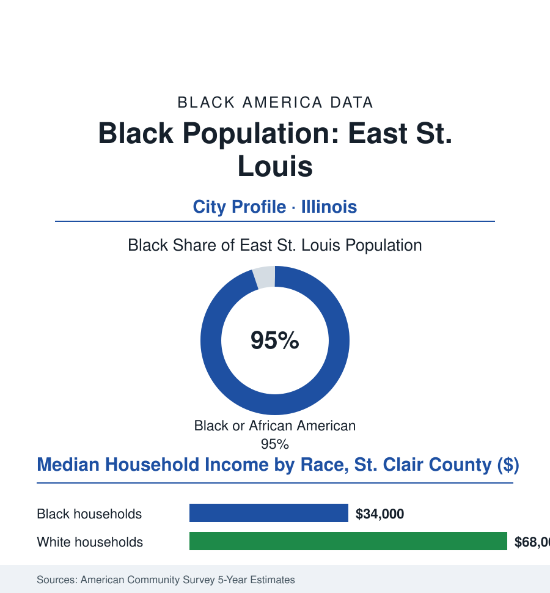

Black Cities
Black East St. Louis: 17,000 People in the City the River Built Twice
East St. Louis is one of America's Blackest cities — an industrial giant's shell holding a community whose musicians, athletes, and churches outlasted the factories.

East St. Louis's Black community numbers roughly 17,000 people — about 95% of the city's 18,000 residents, among the highest shares of any city in this atlas — directly across the Mississippi from St. Louis, in the floodplain where the railroads, stockyards, and smelters once made it an industrial titan. The factories are mostly gone. The community that outlasted them is the story. This article reads East St. Louis's numbers.
An Industrial Giant and Its People
The city's first build was pure industry: the river crossing and the rail yards made it a processing colossus (the stockyards among the world's largest, the aluminum and chemical works lining the river), and Black workers came in the Great Migration's first wave for wages that, by the Delta's standards, were freedom's arithmetic — the population climbing past 75,000 by the mid-century censuses, the Black share rising through every decade of the industry's long prime. The era's traumas are part of the demographic record and are stated here as the record states them: the 1917 pogrom — among the deadliest episodes of racial violence in American history — drove thousands of Black residents across the bridges in a single week and stands in the population tables as a visible wound, one the community answered by rebuilding and, in time, becoming the city's overwhelming majority. The second build was cultural and institutional, and its export ledger embarrasses cities ten times its size: Miles Davis was raised on its streets; its high-school bands and its Lincoln High produced generations of musicians; Jackie Joyner-Kersee — by wide acclaim the greatest female athlete of the twentieth century — came out of its Mary Brown Center and its track program to the Olympic podiums, and came home to build the foundation that still bears her name there; its churches and its Katherine Dunham heritage (the dancer-anthropologist made its East Side her late-life base, her museum and workshops in the city's houses) mark a cultural density no census category holds. The deindustrialization that followed was the Rust Belt's standard catastrophe administered at concentrated dose (the stockyards and works closing across the seventies and eighties, the tax base following the jobs, the population falling by three-quarters from its peak in the census series) — state fiscal intervention, the riverfront casino, and the MetroLink's arrival marking the stabilization era's instruments.
The Present Ledger
The modern data describe one of America's most extreme municipal ledgers, and also its stubborness: the distress rows at the atlas's deep end (poverty above thirty percent in the survey years, a Black median household income in the mid-thirty-thousands for the county context, the housing stock's vacancies and the infrastructure's age in the engineering surveys — the flood file's levee questions hanging over a city built in a floodplain), against the resilience rows the same surveys record (homeownership's share holding above the renter-heavy stereotype for a city this poor — the owned bungalow as the elders' retained asset, a Black city governed by its own across two generations now, its school district under and out of state oversight in the education file's cycles, its young people leaving for the region's suburbs in the metro pattern while its institutions — the Jackie Joyner-Kersee Center, the churches, the Dunham legacy — anchor the ones who stay). The regional frame is the city's practical future in its plans: the Metro East's logistics boom (the warehouse file's corridor rising in the neighboring fields — the jobs geography of the new economy ringing the old city), the river and rail assets unchanged in their logic since the first build, the St. Louis metro's three million people across a bridge the city's residents cross to work in both directions. The counting has one more entry the tables always miss: per capita, few American places of any size have given the nation more music, more speed, and more grace per resident than this one's eighteen thousand.
Reading East St. Louis's Numbers
Seventeen thousand people, ninety-five percent of their city: East St. Louis is the cities file's extreme case of the atlas's central pattern — the industry left, the people stayed, and what they built while staying became the place's permanent contribution. The census counts the remnant. The record books — musical, Olympic, spiritual — count the rest.
More in Black Cities
Black Atlanta: Population, Distribution, and Growth of a Black Metropolis
Metro Atlanta holds more than two million Black residents — roughly one in three, second only to New York. The suburban distribution, migration history, and composition of Black Atlanta in the census data.
Black New York: The Largest Black Population in America
The New York metropolitan area holds about 3.4 million Black residents — more than any metro in the nation — and the city itself about two million. The census profile.
Black Washington: The District and the Metro
The Washington metro holds about 1.6 million Black residents, and the District itself — long a majority-Black city — now records a Black share near 41 percent. The census profile.
Source: U.S. Census Bureau, 2020 Census and American Community Survey 5-year estimates; City of East St. Louis; Illinois Department of Commerce and Economic Opportunity.